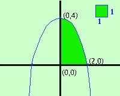

|
Calcolare l'area della regione di piano limitata dalla curva y = -x2 + 4, e dai semiassi positivi delle x e delle y facciamo la rappresentazione grafica completa del problema (potrei abbreviare) devo rappresentare graficamente la parabola y = -x2+4 1) Troviamo le coordinate del vertice abbiamo a = -1 b = 0 c = 4 Calcoliamo la coordinata x del vertice: Vx
Calcoliamo la coordinata y del vertice: Vy
V = (0; 4) 2) troviamo l'intersezione C con l'asse y teoricamente dovremmo fare il sistema fra l'asse y (equazione x=0) e la parabola; pero' e' sufficiente prendere come prima coordinata 0 e come seconda coordinata il termine noto della parabola C = (0; 4); da notare che coincide con il vertice 3) troviamo le intersezioni con l'asse x, se esistono Devo fare il sistema fra la parabola e l'equazione dell'asse x (y=0) y = 0 sostituisco y = 0 y = 0 ottengo le soluzioni 
Devo mettere i punti in un sistema di assi cartesiani e tracciarne la congiungente ricordando che il vertice e' sempre il punto di massimo o di minimo della curva (vuol dire che sul vertice devo fare la conca) Ora devo considerare la parte di piano compresa fra la curva e i semiassi positivi delle x e delle y, cioe'la parte nel primo quadrante  |